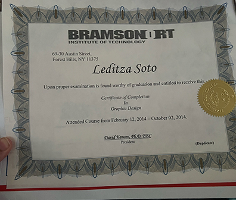

Even with a busy life, I started working on small projects and practicing design.
I remembered my graphic design certificate from 2014 and how much I love creating.

Each small step felt like progress toward my dream of becoming a UX/UI designer.
Return to Where It All Began